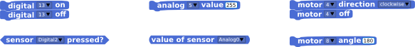
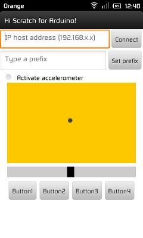
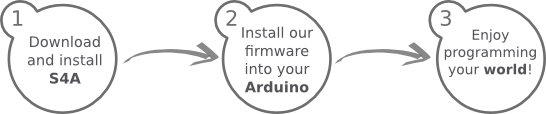

S4A é uma modificação do Scratch que permite programação simples da plataforma de hardware aberto Arduino. Ela provê novos blocos para gerenciar sensores e atuadores conectados ao Arduino. Há também uma placa de relatório de sensores similar à PicoBoard.
O foco principal deste projeto é atrair pessoas para o mundo da programação. O objetivo também é fornecer uma interface de alto nível para programadores de Arduino com funcionalidades tais quais interagir com um conjunto de placas através de eventos de usuários.
A Interface
Um programa do S4A que controla um sensor de luz Theremin, com capacidades de gravação e execução
Objetos do Arduino oferecem blocos para as funcionalidades básicas do microcontrolador, saídas e entradas analógicas e digitais, e também para de alto nível. Você pode encontrar blocos para gerenciar servomotores padrão ou de rotação contínua:

Em S4A, uma placa Arduino é representada por um tipo especial de figura. A figura do Arduino encontrará automaticamente a porta usb onde a placa está conectada.
É possível conectar múltiplas placas ao mesmo tempo apenas adicionando uma nova figura do Arduino.
Detalhes técnicos
Placas suportadas
S4A funciona com o Arduino Diecimila, Duemilanove e Uno. Outras placas não foram testadas, mas também podem funcionar.
Conectividade
Componentes devem ser conectados de uma forma específica. O S4A permite 6 entradas analógicas (pinos analógicos), 2 entradas digitais (pinos digitais 2 e 3), 3 saídas analógicas (pinos digitais 5, 6 e 9), 3 saídas digitais (pinos 10, 11 e 13) e 4 saídas especiais para conectar um servomotor de rotação contínua Parallax (pinos digitais 4, 7, 8 e 12).
Você pode gerenciar uma placa sem fios adicionando um módulo de RF, como um Xbee.
S4A permite que você controle quantas placas puder conectar nas portas USB de seu computador.
Compatibilidade
S4A é retrocompatível com o Scratch, portanto você pode abrir projetos do Scratch nele. Porém, você não poderá compartilhar seus projetos na comunidade no website do Scratch pois seria contra os termos de uso do Scratch .
Leve em conta que esta compatibilidade não funciona em duas mãos, portanto você não poderá
abrir um projeto do S4A pelo Scratch original.
Utilizar uma PicoBoard juntamente de uma placa Arduino também é suportado.
Protocolo
S4A interage com o Arduino enviando os estados dos atuadores e recebendo estados dos sensores a cada 75 ms, portanto a largura de pulso necessita ser maior que este período de tempo. A troca de dados segue o protocolo da PicoBoard e precisa de um programa específico (firmware) instalado na placa. Por favor use a sessão de Downloads como referência de instruções em como fazer isso.
Documentação e Exemplos
Aqui você irá encontrar toda a documentação, vídeos, exemplos e exercícios que desenvolvemos.
Oficina
Um arquivo zip com o material completo e exercícios para uma oficina pode ser baixada aqui:
Estes materiais foram criados e utilizados pela nossa equipe em um curso real de S4A na Elisava School of Design (Barcelona) em 2011.
Exemplos Básicos
Aqui você encontrará os exemplos básicos do S4A, completos com esquemáticos do Arduino e um arquivo .sb de projeto do Scratch para que efetue download.
Botão e LED
Um simples exemplo mostrando como acionar um LED apertando um botão.
Algumas das próximas demonstrações estão em catalão ou espanhol, porém as imagens falam por si mesmas. Alguns dos vídeos também possuem legendas em inglês.
Robô completo
Um robô com câmera rotativa, sensores de distância e um controle remoto. Ele utiliza duas placas Arduino (controle remoto + robô), um XBee, módulo sem fio, três sensores IR, um módulo de câmera e três servomotores.
Oficina de Introdução ao S4A
Este vídeo serve como introdução às oficinas de S4A dadas no Citilab, porém você encontrará algumas demonstrações do que pode ser ser alcançado com nosso software.
Nós desenvolvemos uma simples aplicação Android que pode se comunicar com o S4A através de HTTP utilizando o protocolo de sensores remotos do Scratch. Você pode baixá-lo aqui ou escaneando o QR code abaixo:
Para utilizá-lo, siga as instruções abaixo:
No S4A, ative sensores remotos (botão direito em qualquer bloco de "Sensores")
Em HiS4A (Android), digite o IP de rede local do computador executando S4A (pode descobrir através de Editar > Mostrar endereço IP), e também o prefixo (apenas necessário se você conectará mais que um cliente Android)
Os botões correspondem a mensagens e o touchpad e slider a sensores remotos 
IMPORTANTE! Ambos S4A e HiS4A devem estar conectados na mesma rede local!
HTTP API
A aplicação Android utiliza um protocolo muito simples que desenvolvemos sob o protocolo de mensagens HTTP do Scratch, então é possível interagir com o S4A através de um navegador ou de qualquer outra aplicação de rede.
Você primeiro precisará ativar a opção de sensores remotos no S4A (botão direito em quaisquer bloco de "Sensores")
Especificações de Mensagem
Anunciar uma mensagem: http://[IP]:42001/broadcast=[nome-da-mensagem]
Enviar o valor de um sensor remoto (por exemplo, o acelerômetro do cliente, posição do mouse, etc): http://[IP]:42001/sensor-update=[nome-do-sensor]=[valor]
Atualizar uma variável do S4A: http://[IP]:42001/vars-update=[nome-da-variavel]=[valor]
Aplicação web de teste
Se você quer visualizar a API HTTP em ação, pode fazê-lo pelo nossa aplicação web de teste:
Variáveis do S4A cujo nome começam com um sinal de mais (por exemplo +playerName) são visíveis e modificáveis pelo cliente web
Variáveis do S4A cujo nome começam com um sinal de menos (por exemplo -playerScore) são apenas visíveis (e não modificáveis) pelo cliente web
Variáveis do S4A cujo nome não começa com um sinal de menos ou de mais não são visíveis pelo cliente web
Mensagens do S4A cujo nome começa com um sinal de mais (por exemplo +startGame) são visíveis pelo cliente web
Mensagens do S4A cujo nome não começa com um sinal de mais não são visíveis pelo cliente web
Changelog
Versão 1.5
Corrigido bug de colisão de objetos (Arduino e não-Arduino)
Corrigido bug relacionado à mensagem de erro persistente ao parar e resumir conexão com a placa
Modificadas primitivas indexadas para nomeadas para uma melhor compatibilidade com novas máquinas virtuais Squeak (agradecimentos a Miriam Ruiz pelo patch)
Modificado pino 12 do servo padrão para saída digital normal
Modificado pino padrão dos blocos digitais on/off de 13 para 10
Adicionado bloco para reiniciar atuadores
Melhoradas traduções em Catalão e Espanhol
Versão 1.4
Adicionada total compatibilidade com o protocolo HTTP (POST E GET), agora você pode enviar mensagens para o S4A e visualizar/modificar valores de variáveis pelo navegador da internet (dentre outras coisas). Veja a sessão de Android.
Adicionada opção "verificar por atualizações" no menu "Ajuda", a partir de agora não há necessidade de visitar o website para verificar por novas versões.
Linguagem agora é detectada na primeira execução (quando o arquivo Scratch.ini não existir). Também é gravada neste arquivo se modificada pelo menu de linguagens
Porta serial onde a placa está conectada abre corretamente quando o S4A é executado
Corrigido bug na versão Windows em que a barra de títulos não mostra o nome e versão do S4A ao ser executado
Versão 1.3
Corrigida compatibilidade com Arduino UNO no Linux (agradecimentos a Jorge Gómez). Você precisará carregar o novo firmware, além de atualizar o bootloader em algumas placas
Modificados os nomes de placas de sensores e seus correspondentes blocos do Arduino para mostrar números reais dos pinos
Adicionado comandos de servidor para o menu "Editar" para gerenciar comunicação de rede sobre sockets
Adicionada compatibilidade para aplicativos Android (HiS4A)
Melhoradas traduções em Catalão e Espanhol
Muitas correções de bugs
Baixar e Instalar

Instalar o S4A requer que você instale software tanto no seu computador quanto na sua placa Arduino. Aqui você irá encontrar passos detalhados de como fazê-lo e ter tudo funcionando.
Instalando o S4A em seu computador
S4A funciona nos três principais sistemas operacionais para consumidores. Baixe e instale de acordo com sua configuração:
Este firmware é um pedaço de software que precisará instalar em sua placa Arduino para que seja capaz de comunicar-se com o S4A.
Baixe e instale o ambiente de desenvolvimento do Arduino seguindo as instruções em http://arduino.cc/en/Main/Software. Leve em conta que Arduino Uno requer pelo menos a versão 0022.
Conecte sua placa Arduino à porta USB do seu computador
Abra o arquivo de firmware (S4AFirmware15.ino) no ambiente
de desenvolvimento Arduino
No menu Ferramentas, selecione a versão da placa e a porta serial onde a placa está conectada
Carregue o firmware na sua placa através de Ferramentas > > Upload
Para Desenvolvedores
S4A é um software livre distribuído sob uma licença MIT.
Como o Scratch é na realidade uma imagem de Squeak Smalltalk, todo seu código já vem incluído dentro da versão para usuário final. Para acessá-lo, apenas pressione shift + clique esquerdo no menu "Arquivo" do S4A e selecione "Sair de Modo Usuário". Você está agora de cara de uma imagem Squeak 2.8 clássica, e tem acesso a um Navegador, Espaço de Trabalho e todas ferramentas que está acostumado.
Entretanto, na versão de usuário final algum código foi compilado e você perderá diversos nomes de variáveis e mensagens de argumento, e é por isso que também provemos uma imagem do código fonte limpa para desenvolvedores, disponível aqui:
S4A funciona com o Arduino Diecimila, Duemilanove e Uno. Outras placas não foram testadas, porém também podem funcionar.
O S4A funcionará no meu PC?
S4A funciona nos três principais sistemas operacionais para consumidores: Microsoft Windows, GNU/Linux e MacOS. Então sim, muito provavelmente irá funcionará no seu PC.
A Equipe
S4A tem sido desenvolvido no Citilab pelo Edutech Research Group, com a ajuda do grupo de programação Smalltalk.cat e de colaboradores como Jorge Gómez, que lidera o projeto de hardware e software educacional no Miscela.
Marina Conde
Marina Conde se formou bacharel de Ciência da Computação pela Universidade Técnica de Catalonia (UPC) em 2009, e graduou-se em Engenheira da Computação em 2012 na mesma universidade.
Sua primeira tese final consistia em construir uma framework para trabalhar com placas Arduino através do ambiente Pharo Smalltalk. Mais tarde, ela utilizou este projeto como a base na qual o S4A foi escrito.
Víctor Casado
Víctor decidiu cursar Ciência da Computação na Universidade Autônoma de Barcelona (UAB), mas após dois anos ele mudou para a Escola de Tecnologia Castelldefels (EPSC) onde realizou um curso técnico em telecomunicações.
Enquanto lá, ele teve a oportunidade de entrar para o Citilab através de um estágio, onde ele futuramente desenvolveu o S4A, sua tese final.
Joan Güell
Joan é um biologista que, em sua juventude, trabalhava no ramo de ecologia. A necessidade para analizar a informação gerada e coletada o aproximou da computação. Ele se inscreveu em seu primeiro curso de programação em 1975, quando computadores ainda eram programados através de cartões perfurados.
Seu principal trabalho no Citilab tem sido relacionado ao campo de treinamento em duas áreas: ensinar programação com Scratch, especialmente para crianças, e ensinar habilidades com computadores para adultos.
Jose García
Jose estudou engenharia de telecomunicações avançada, mas começou a trabalhar em uma editora antes de completar seu curso. Durante seu tempo na companhia, ele trabalhou programando uma ampla variedade de aplicações.
No Citilab, ele descobriu o Scratch e Smalltalk, retomando parte de seu trabalho de programação novamente. Mais tarde, ele se uniu a diferentes projetos com foco em estabelecer um contato mais próximo entre usuários e programação. Ele atualmente lidera a equipe de Pesquisa Educacional Tecnológica Edutec.
Bernat Romagosa
Em 2009, Bernat graduou-se como engenheiro técnico em Ciência da Computação na Universidade Aberta de Catalonia (UOC). Ele aprendeu Smalltalk em um curso ministrado por Jordi Delgado no Citilab em 2008, onde ele futuramente foi contratado para construir uma escola de programação online.
Desde então, ele tem estado envolvido em diversos projetos de programação no Citilab, incluindo um sistema de gerenciamente de conhecimento social e diferentes aplicações educacionais.
Jordi Delgado
Jordi é um professor associado no Departamento de Software da Universidade Técnica de Catalonia (Universitat Politècnica de Catalunya). Ele faz parte do grupo de pesquisa LARCA e ensina na Escola de Informática de Barcelona.
Ele passa maior parte de seu tempo divulgando, espalhando a palavra e programando em Smalltalk, uma incrível linguagem de programação que, você sabe, todos deveriam estar utilizando. Ele é membro do conselho do Grupo de Usuários Europeus de Smalltalk (ESUG) e ele lidera o grupo local Smalltalk.cat.
Comunidade
Para quaisquer questões e respostas, por favor utilize a lista de email para suporte da comunidade. Você pode assiná-la enviando um email para:
 Um programa do S4A que controla um sensor de luz Theremin, com capacidades de gravação e execução
Um programa do S4A que controla um sensor de luz Theremin, com capacidades de gravação e execução